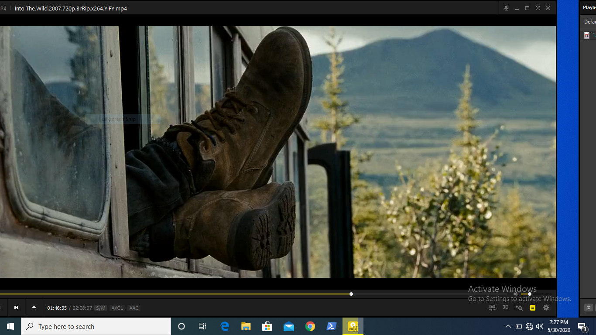

(Bengali: বান্দরবান, Chakma: 𑄝𑄚𑄴𑄘𑄧𑄢𑄴𑄝𑄚𑄴, Marma (Burmese): ဘန်ဒါဘန်)is a district in South-Eastern Bangladesh, and a part of the Chittagong Division.[4] It is one of the three hill districts of Bangladesh and a part of the Chittagong Hill Tracts, the others being Rangamati District and Khagrachhari District. BandarbanBandarban city is the headquarters of the Bandarban district. Bandarban district (4,479 km2) is not only the most remote district of the country, but also the least populous (population 292,900).[5] There is an army contingent at Bandarban Cantonment .  Bandarban town is the hometown of the Bohmong Chief (currently King, or Raja, U Cho Prue Marma ရာဇာ ဦးစောဖြူ မရမာ) who is the head of the Bohmong Circle. Of the other hill districts, Rangamati is the Chakma Circle, headed by Raja Devasish Roy and Khagrachari is the Mong Circle, headed by Raja Sachingprue Marma (ရာဇာ á€á€¬á€…á€á€”်ဖြူ မရမာ). Bandarban is regarded as one of the most attractive travel destinations in Bangladesh. It also is the administrative headquarters of Bandarban district, which has turned into one of the most exotic tourist attractions in Bangladesh.
some places you souldnot visit at the time of rainy season